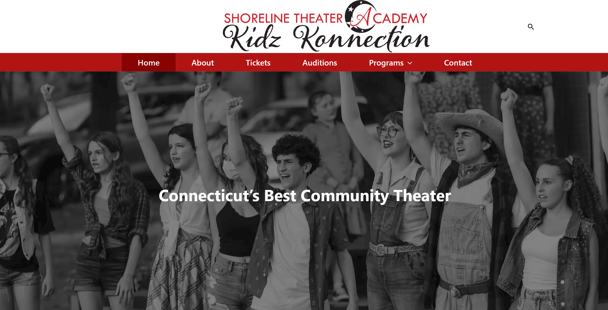

Shoreline Theater Academy Website
2021 - 2025

- Skills / Technologies Used:
- HTML
- CSS
- CPanel
- PHP
- PHPmyAdmin
- Wordpress
- Ethernet Servers
Project Description:
As the website manager for the Shoreline Theater Academy, I am responsible for maintaing the wordpress site and the hosting servers to ensure it is availbe and easy to use for clients. In February 2025, I managed the creation and launch of a brand new site with modern technologies to deliver a better experience to our customers.